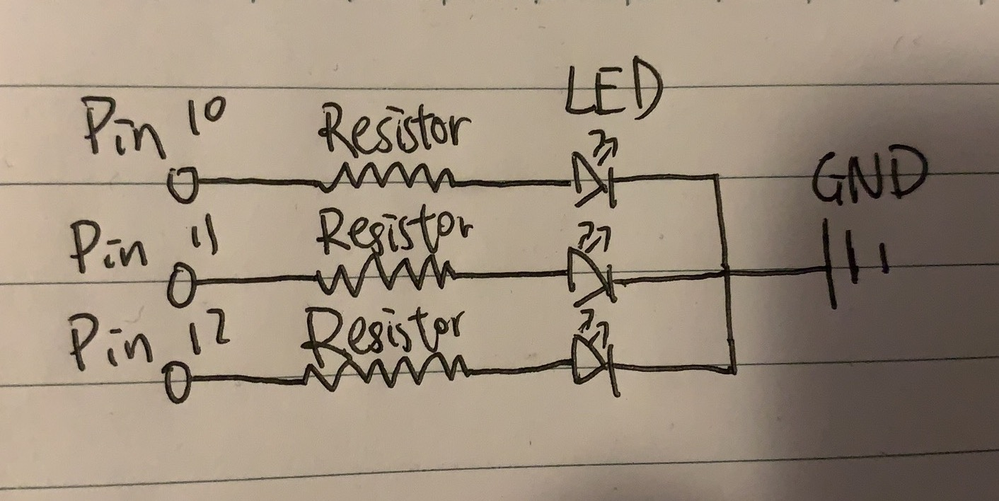

Assignment 1: Blink!
Schematic

The schematic demonstrates how I accomplish making three LED blink sequentially. First, Connect
each LED to a separate Pin on Arduino. Second, add resistors to the circuit to drop the voltage on
each LED to prevent LEDs from breaking. Finally, Connect the LEDs back to GND on Arduino.
Circuit

In this assignment, I used blue, red, and white LEDs along with 220K resistors. The resistance of each LED is around 100 ohms. If only using the LED without any resistor, I would destroy the LED because the current flowing throught LED would be 5V/100 ohms = 0.05A which would not be good to the LED. If I used 220K resistors, the current flows through each LED would be around 5V/(100 + 220) ohms = 0.015A which is in the desired current range.
Firmware
Circuit's operation

Each LED is blinking independently. By setting the delay time for switching on/off LED,
LEDs blink sequentially. Every LED will blink 1/5 second in a loop.